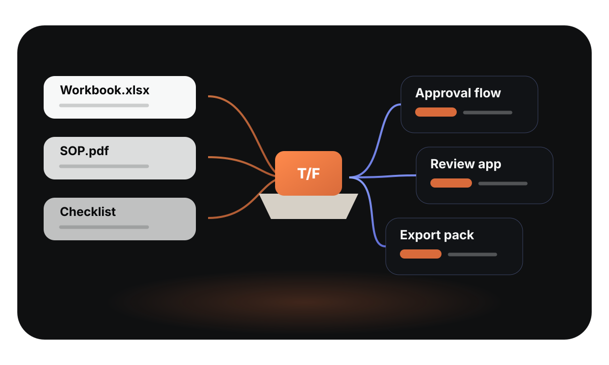
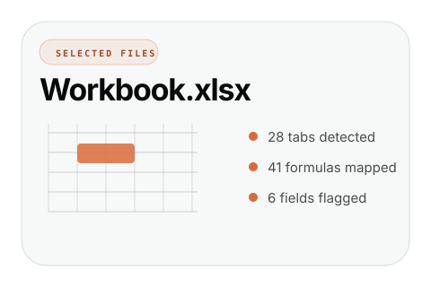
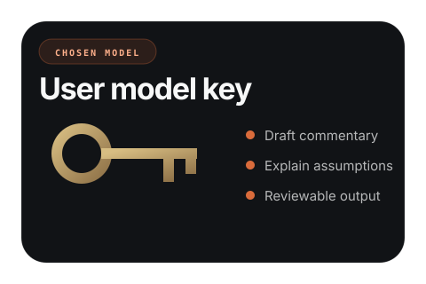
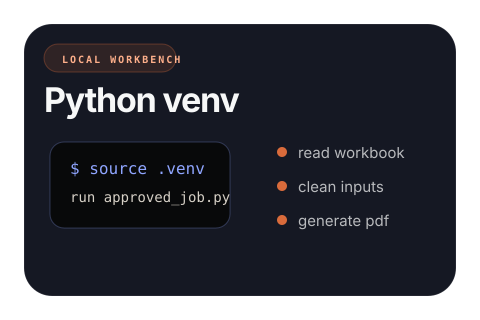
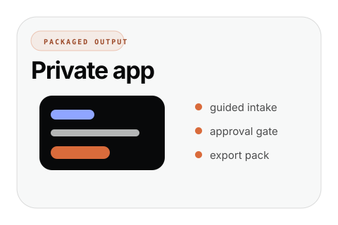
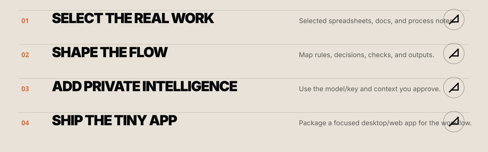
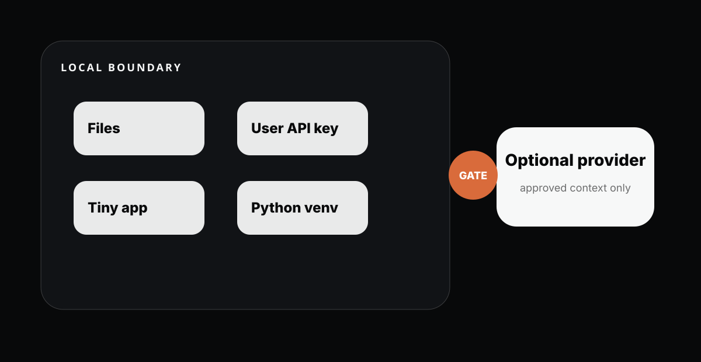
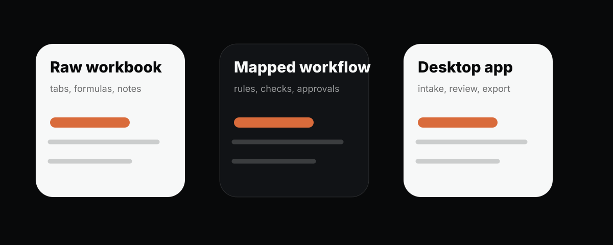

TINYFOUNDRY
COLLATERAL PACK
Local SVG assets for Juliet to integrate into the TinyFoundry landing page. Inspired by Juna/Gyld's collectible card visual system and Antaeus Travel's editorial scale, thin rules, circles, and whitespace.







